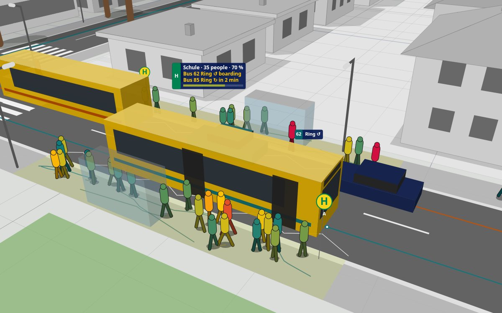

Prototype1 · Passenger flows, town and buses
A town that goes to work
Passengers wait where their train stops and board through the doors; their colour shows their mood. Around the station, residents of Plattenbau, Gründerzeit blocks and houses go to work, school and shopping on foot, by bus and by train, on a fast clock through day and night.
In teaching: station and public transport planning, intermodal trips, demand over the day.